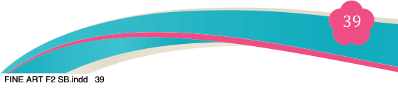
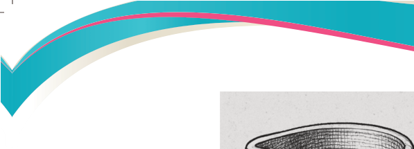
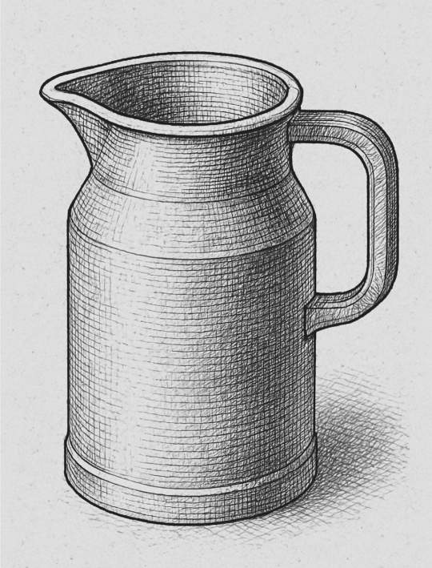

Figure 3.6: Utilitarian functional drawing of a jug
iii. Conceptual drawing:
Conceptual drawing is often referred to as concept art or conceptual design. It
is the initial visual representation of an idea or concept. It serves as a blueprint
for further development and refinement in various fields such as entertainment,
product design, and advertising.
The difference between conceptual and utilitarian or functional art
A conceptual drawing should not be confused with a utilitarian functional drawing
due to the fact that a conceptual drawing mostly focuses on the idea or concept of
something and how well it can be useful but cannot be created in the real world.
On the other hand, a utilitarian functional drawing focuses on something that can both be practical or useful in the real world and can actually be made in real life.
For example, a conceptual drawing of a flying chair would help in the creation of
something that would be very useful in the real world as a means of transportation
but in reality, it has very low practicability because it is just an idea of something which cannot be created in the real world. But a utilitarian functional drawing of a simple chair is a drawing of something that can be used and created in the real world.